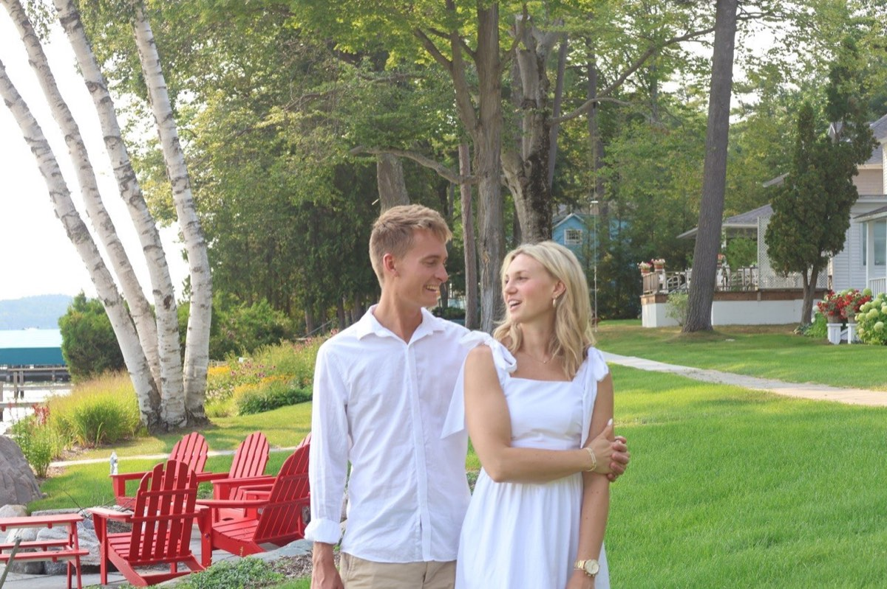
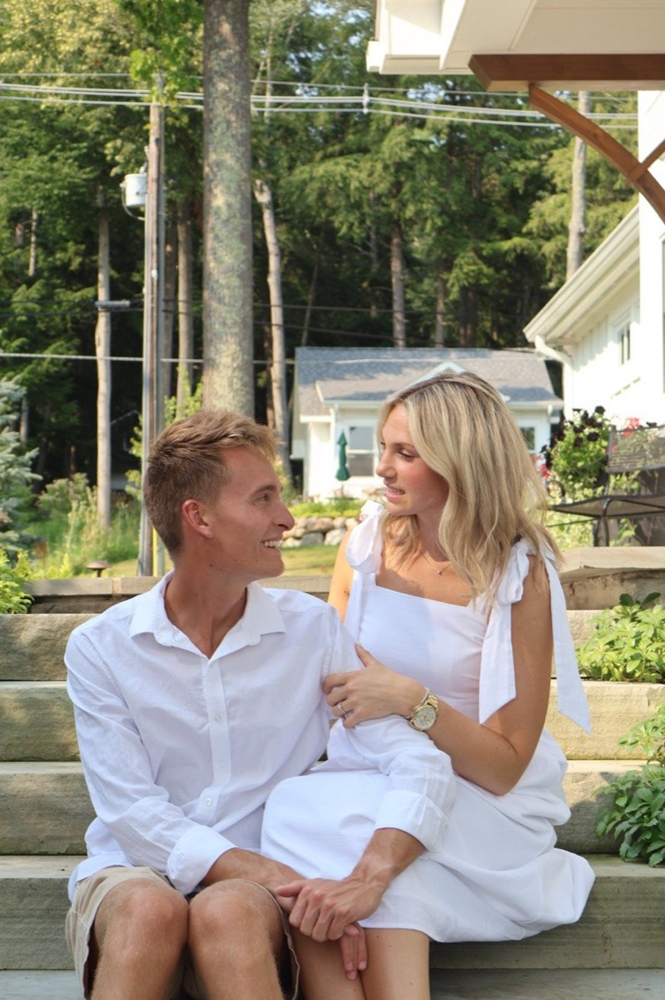
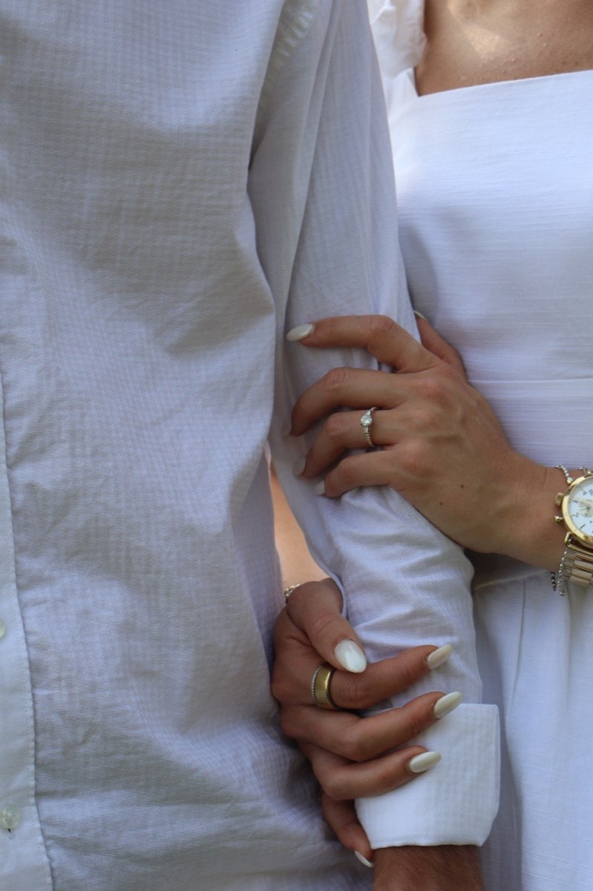
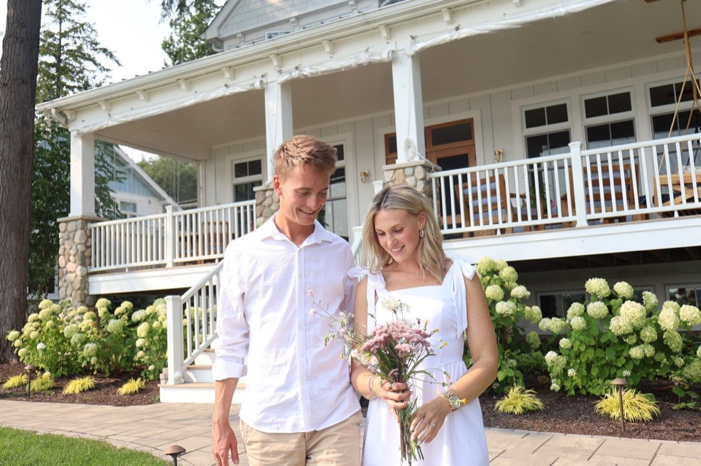
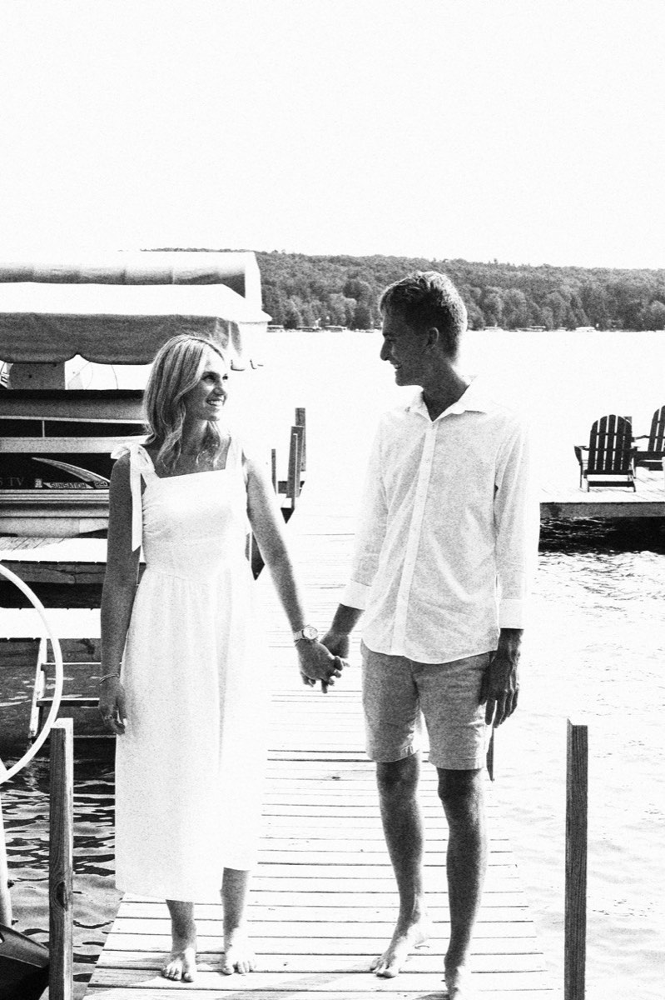

June 26, 2027
Saturday · Ceremony time to come
Walloon Lake, Michigan

Together with our favorite people
Saturday, June 26, 2027
Walloon Lake Country Club
Wedding detailsMeet us by the water.
Our story
The best parts of our life together are the simple ones: laughing until we can’t finish the sentence, choosing the next adventure, and finding a little more joy in ordinary days because we’re sharing them.
Now we get to begin our next chapter surrounded by everyone who helped bring us here.
Tucker & Syd


The wedding
Saturday · Ceremony time to come
Walloon Lake, Michigan
We’ll share the full schedule as plans are confirmed.
Northern Michigan
We’re excited to welcome you to Walloon Lake. Lodging, transportation, and weekend guidance will be added here once every detail is confirmed.
Invitations are planned for early February 2027. RSVPs will be due April 30, 2027.

Our favorite frames
Sunshine, bare feet, and one very happy afternoon by the lake.
Good to know
We’ll keep this page current as the weekend comes together.
Saturday, June 26, 2027 at Walloon Lake Country Club in Walloon Lake, Michigan.
Ceremony-time details to come.
Dress-code details to come.
Travel and lodging details to come.
Invitations are planned for early February 2027. RSVPs will be due April 30, 2027. RSVP-method details will come with the invitation.
Household and plus-one details will come with the invitations.
Registry details to come.